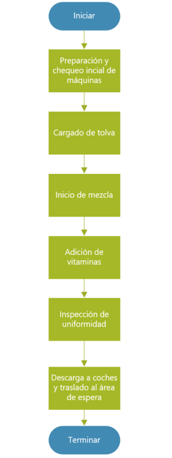
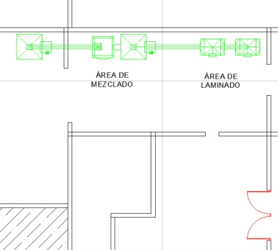
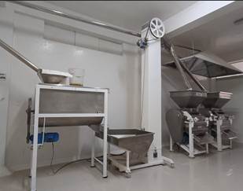
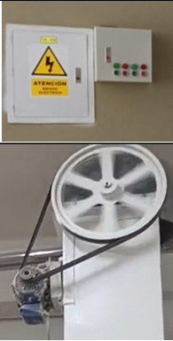
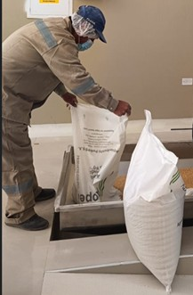
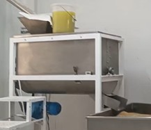
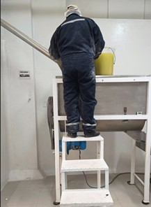
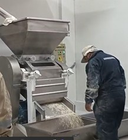
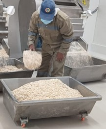

Datos Generales
| Empresa: | Procesadora Agroindustrial Nuevo Imperio E.I.R.L. |
|---|---|
| Área: | Producción |
| Operación: | Tratamiento de Avena |
| Diagrama Nº: | 02 |
| Objetivo: | Estimar tiempos y establecer cómo se realiza el proceso productivo de tratamiento de avena. |
| Método: | Actual |
| Operador(es): | Operario de Producción |
| Elaboró: | ___ / Fecha: 21/10/2025 |
| Aprobó: | ___ / Fecha: 23/10/2025 |
I. Contenido de la Operación
| Contenido | Descripción / Detalles |
|---|---|
| Análisis de operación | Proceso de tratamiento de avena desde la preparación de equipos hasta el traslado del producto laminado al área de espera. |
| Principales pasos |
1. Preparación y chequeo inicial de máquinas. 2. Cargado de tolva. 3. Inicio de mezcla. 4. Adición de aditivos y control de mezcla. 5. Laminado (operación de máquina). 6. Inspección de uniformidad y extracción de mermas. 7. Descarga y traslado a área de espera. |
| Tiempo de operación | 1.866 min total por ciclo (ver diagrama de flujo). |
| Puntos clave | Controlar peso, tiempo de mezcla, proporción de aditivos y uniformidad del laminado. |
| Razón para puntos clave | Asegurar la calidad nutricional y textura del producto, evitando desviaciones en formulación. |
| Herramientas | Tolva, mezcladora, laminadora, coches de transporte, espátulas, balanza de precisión. |
| Equipo de seguridad | Casco, guantes, botas dieléctricas, mascarilla, protectores auditivos. |
| Concepto por inspeccionar | Tiempo de mezcla, cantidad de aditivos, uniformidad de lámina, temperatura de operación, limpieza del equipo. |
| Grado de importancia | Alta |
| Frecuencia | Cada lote de 150 kg |
| Método de inspección | Observación directa, registro de parámetros de máquina y control de muestra. |
| Norma de aceptación | Cumplimiento de tiempo de mezcla ±5%, aditivos correctamente dosificados y laminado uniforme sin aglomeraciones. |
| Tipo de registro | Registro en hoja de operación, control de parámetros y planilla de producción. |
II. Diagramas y Evidencias
| Diagrama de Proceso | Layout y Foto del Lugar |
|---|---|
|

Diagrama Nº 02: Flujo del proceso de tratamiento de avena. |
Layout de UbicaciónFoto del Lugar |
Descripción del Proceso
El proceso de tratamiento de avena comprende la preparación de equipos, mezcla controlada y laminado del producto para obtener una textura homogénea y de calidad. Cada fase incluye parámetros técnicos definidos que aseguran la uniformidad del lote y la correcta dosificación de aditivos.
Hoja de Procedimiento Estándar
| Actividad | Punto clave | Razón | Ayuda visual |
|---|---|---|---|
| Preparación y chequeo inicial de máquinas | Verificar que la mezcladora y laminadora estén limpias, sin residuos del lote anterior; revisar poleas, tolvas y sensores antes de encender. Registrar la revisión en el formato de preoperación. | Para evitar contaminación cruzada, asegurar el correcto funcionamiento del equipo y garantizar condiciones seguras antes del inicio del proceso. |  |
| Cargado de tolva | Coger los sacos de 25 Kg por el centro con las dos manos y cargarlos de forma uniforme, evitando golpes o derrames hasta terminar agarrando el saco por los extremos. | Mantener la homogeneidad del lote y evitar pérdida de materia prima o variaciones en la cantidad procesada. |  |
| Inicio de mezcla | Encender la mezcladora manteniendo la velocidad y tiempo establecidos (7 minutos por ciclo). Supervisar visualmente el movimiento del producto. | Garantizar una mezcla uniforme que facilite el tratamiento térmico posterior y mantenga la textura deseada. |  |
| Adición de aditivos / vitaminas y control | Dosificar los aditivos según la receta, utilizando balanza de precisión; incorporar gradualmente mientras la mezcla está en marcha y registrar la cantidad aplicada. | Asegurar la proporción correcta de micronutrientes, evitando desviaciones que afecten la calidad nutricional del producto. |  |
| Laminado (operación máquina) | Ajustar la presión y velocidad de la laminadora según parámetros establecidos; supervisar visualmente la salida del producto. | Obtener una lámina uniforme, con espesor constante y sin exceso de humedad, mejorando la textura final del producto. |  |
| Inspección de uniformidad y extracción de mermas | Realizar inspección visual y táctil de la lámina; retirar los bordes irregulares o zonas aglomeradas. Registrar las mermas detectadas. | Evitar que las irregularidades afecten la presentación, el peso o la textura del producto terminado. |  |
| Descarga a coches (100 kg) y traslado al área de espera | Utilizar coches limpios y en buen estado; cargar 100 kg por unidad y trasladar inmediatamente al área de espera designada. | Prevenir contaminación, pérdida de material o mezcla de lotes, y mantener un flujo continuo hacia el envasado. |